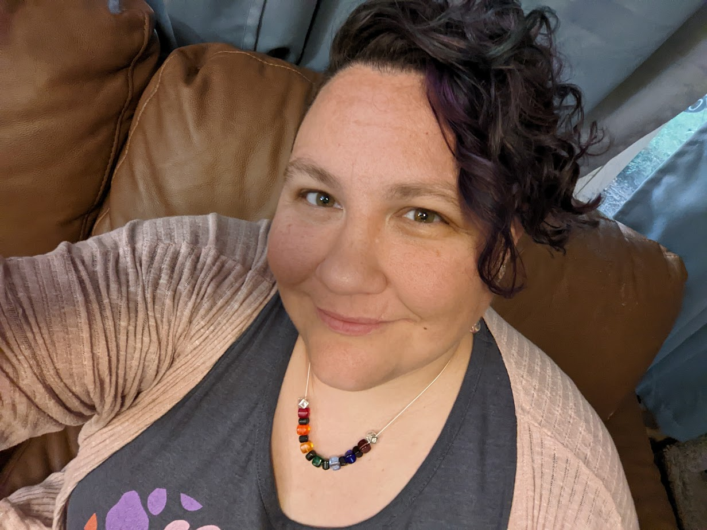
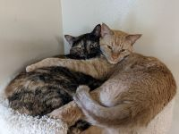

Resume and References can be downloaded here:
Current Resume ReferencesLily grew up in South Florida, dreaming of one day leaving the heat and humidity for the mountains and snow of the north. The ticket out was a scholarship to Montana State University in 2002. There, Lily majored in Organismal Biology and graduated in 2006 with a Bachelor's of Science and an Honors Degree.
After working for an animal shelter, a vet, and a hardware store, Lily decided to get more education through San Juan College's online program. She earned her certificate in veterinary assistance and started working for Pullman, Washington's Alpine Animal Hospital in 2012.
Lily moved back east to Iowa in 2016, where she focused on being a mother to her two amazing daughters. She took a part-time job in 2017, reading stories and singing songs to children at various daycare centers and schools through the local library's Project Smyles program. She briefly worked as an assistant teacher for a local daycare, but soon moved back towards veterinary medicine in 2019, accepting a position with Iowa State University's Veterinary Medical Center in the Medical Records department.
Working with electronic medical records and transfering information to other vets, clients, and universities showed Lily that there was a need for better electronic record management software in veterinary medicine. This lead to researching how this software is created and computer coding in general. Not content to sit and wait for someone else to fix things, Lily took the first step by enrolling in the Computer Information Systems online program at Des Moines Area Community College (DMACC).
Fortunately, many of the fundamental courses (math, english, science, etc) had been covered while earning a Bachelor's in Biology, allowing Lily to jump into coding and programming quicker than first-time college students. Classes taken include C++, Introduction to Databases, Introduction to Programming Logic, and the course leading to the creation of this page, Introduction to HTML and CSS.
Lily is enjoying these classes more than she thought she would. She has even used what she is learning in this course to create a webpage for her brother-in-law, who has started his own roofing company after being in the business for many years. She is currently applying for internships for the summer of 2023 and is excited by the possibilities ahead.
When she is not at work or online learning about computers, Lily enjoys creating various items (jewelry, ornaments, decorations, etc) with beads, tumbling stones to use in her creations, spending time with her family, and wrangling her cats.
The plan for the future includes resigning from her current position in medical records to attend classes full-time in the spring of 2023. That will be followed by an internship over the summer of 2023 and then one more semester of full-time classes in the fall of 2023 before graduation with an Associate's degree in Computer Information Systems.
The plan is still to apply this new knowledge and skills to create better record-keeping systems for veterinary offices, but the world is full of wonder. As long as she can make some part of the world a little better for her kids and others, that is the over-arching goal for Lily Ellison.
